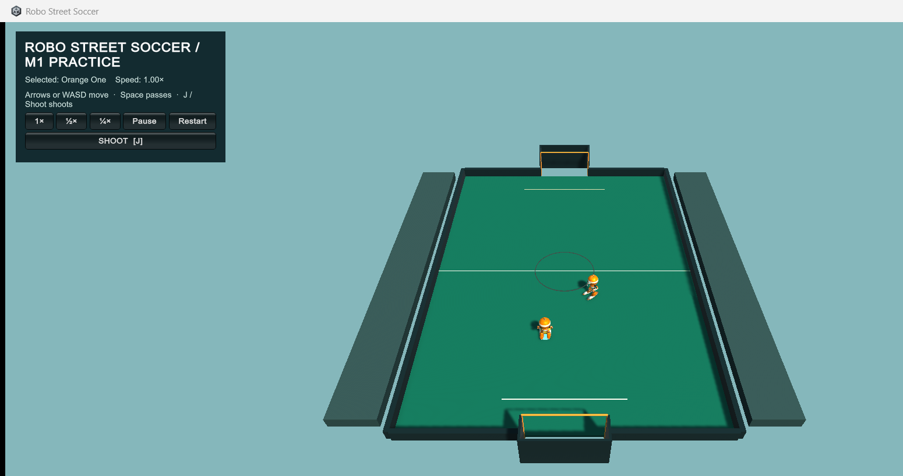
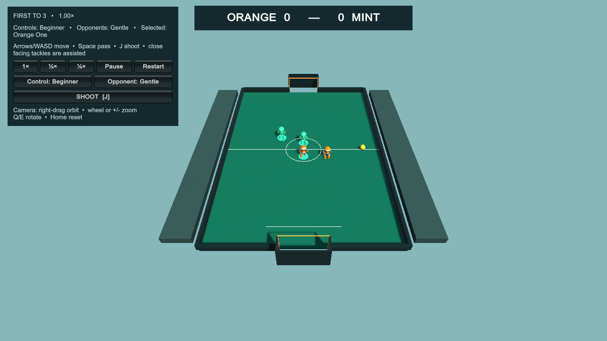

Robo Street Soccer began in a morning voice chat. The human’s difficulty was not football strategy; it was input bandwidth: “I need two unit within a small time window … which seems to be very hard.”
How to read this. Source claims are backed by retained conversations, code, receipts, screenshots, or the release. Reconstructed details are explicitly identified. Limits describe what the evidence cannot establish. Raw transcripts, usernames, personal paths, credentials, and private build history are excluded.
This account was assembled from the chronological voice and text sessions, then checked against the specification, project brief, implementation plan, development log, final source, motion report, machine receipts, screenshots, and package receipt. It records the failures because those failures explain the finished game better than a clean feature list.
1. The brief — make two-player control feel like one action
The first prompt was spoken
“Okay, I want to use the same workflow, instead tennis game, I'm exploring the possibility of turning into a soccer game, but with two players on each side.”
Source · voice transcript The human wanted the earlier robot tennis workflow applied to two-on-two soccer. He immediately identified the hard part: one person could not steer two robots simultaneously and still act inside a useful time window.
The proposed solution became the control spine of the game. The person steers one robot. A local rule-based teammate creates a passing option. The passer stays selected while the ball travels. Control transfers only when the teammate physically receives it. On defense, Advanced play can switch explicitly; Beginner play uses assistance.
The human built a gate before a game
The human required a new project folder, a separate task, and a written specification. His instruction was explicit: notify him when the specification was ready and review it “before you do anything.” The task stopped after PROJECT-BRIEF.md and SPEC.md. No gameplay, asset copy, generation spending, or publication crossed that boundary.
The section-by-section voice review surfaced questions a feature checklist would miss: what robots do on body collision; whether contact should block, push, or both; how a non-gamer gets simpler controls; whether posts and the crossbar are solid; what happens over the boards; and whether “AI” means a selectable model.
Adapt the tennis production workflow to 2v2 robot soccer.
One robot under direct control; teammate supports; pass and switch only on reception.
Specification first. Blocking with slight pushing, Beginner default, physical goal frame, 0.11 m physical radius, and kick-ins are settled.
Clean Unity project, 100 Hz physics, rig validation, quantitative M1, and human review.
M1 proves the physical chain. The human then changes ball, camera, and shooting.
Three lower-model agents complete 2v2, motion, packaging, privacy checks, and release.
The human decisions that survived into v0.1.0
| Question | Rejected alternative | Settled choice |
|---|---|---|
| How to control two teammates? | Steer both simultaneously | One selected robot, AI support, pass-and-switch on confirmed reception |
| How should bodies collide? | Pure blocking or unbounded pushing | Blocking with slight bounded pushing; identical for both teams |
| How complex are controls? | One gamer-oriented preset | Beginner default plus Advanced |
| What is opponent AI? | GPT, Claude, trained policy, cloud API | Local Unity/C# finite states and scored actions |
| What happens at goals? | Decorative posts | Solid frame, live rebounds, whole-ball scoring, duplicate-goal latch |
| What happens over boards? | Full outdoor restart taxonomy | One readable kick-in for the non-last-touch team |
| Which ball dimension? | Ambiguous 0.22 m radius | 0.11 m physical radius / 0.22 m physical diameter |
| How challenging? | One opaque difficulty | Gentle default and Balanced; physics unchanged |
2. Cold start — reuse the workflow, preserve the tennis project
Source · M0 artifacts The reusable robot measured roughly 1.784 m and had a 16-bone armature with hips, thighs, shins, and feet. It had no separate toe joints. The soccer FBX retained 11,813 skinned vertices and nine actions: Idle, Run, Turn, Dribble, Receive, Pass, Shoot, Tackle, and ContactLean.
The robot geometry and visual lineage came from the prior Meshy-assisted tennis project. Soccer did not call Meshy. Blender inspected the rig, produced soccer motion, and exported sanitized source. Unity supplied runtime, input, physics, rendering, UI, scenes, Windows builds, and acceptance. PowerShell drove repeatable packaging and hashing.
Preflight corrected the contract
- Create a clean Unity URP project; do not clone tennis controllers, logs, private configuration, or caches.
- Author the tackle motion early but keep tackle gameplay out of M1.
- Use a constant
0.01 sphysics step at 1×, ½×, and ¼×. Change playback rate, not simulation law. - Require direct reception, no false transfer, no live ball teleport, ≤3 cm stance drift, ≤5 cm target contact gap, and human feel/readability review.
The first failure preceded soccer code
Unity -createProject left partial folders with no package manifest and exited 1:
Failed to update project manifest: The "path" argument must be of type string. Received undefinedThe fix was a minimal explicit manifest/version followed by a normal batch import. Package resolution also needed the standard ALLUSERSPROFILE value supplied to that process. No system-wide configuration changed.
3. Design decisions — physical truth with visible assistance
A dynamic ball, never a possession prop
The authoritative ball is a rigid body with approximately 0.11 m radius, 0.43 kg mass, gravity, rolling resistance, and continuous collision detection. Possession grants permission to attempt an action. It never parents or magnetically attaches the ball. Foot phases apply bounded impulses for dribble, pass, receive, shot, and tackle.
A pass records passer, receiver, and pass identity at physical release. Selection stays with the passer during flight and moves only after a contact-confirmed cushion. A miss, rebound, reset, or interception cannot switch control.
Solid boards and solid goals
Ordinary board impacts remain live. A complete-ball escape enters an explicit dead-ball state, remembers last touch and exit position, clears opponents, and resumes through contact on a kick-in. Posts and crossbar have colliders. Whole-ball plane crossing inside the valid mouth scores; a latch prevents duplicates.
Two axes of accessibility
These axes never change collision radii, fixed-step time, contact validity, or scoring geometry.
Scope cuts
The release omits online multiplayer, keepers, offside, fouls, separate outdoor restart types, trained-model selection, persistent learning, headers, high crosses, bicycle kicks, slides, deforming nets, and full football laws. Those cuts concentrated work on the four-robot physical loop.
4. The core problem — green tests were not a playable game
M1 passed the scripted physical chain and body-contact suite at all three speeds. The human played it and immediately found the gaps. Tests had proved the code’s current contract. Playtesting showed the contract was incomplete.
| Dimension | Early M1 | Final v0.1.0 |
|---|---|---|
| Roster | Human + teammate | 2 orange vs 2 mint |
| Objective | Prove one passing chain | First to three with complete match flow |
| Camera | Fixed and initially cropped | Full court, orbit, zoom, reset, 10°–85° tilt |
| Ball | Regulation-scale render | 0.33 m visual radius; 0.11 m physical radius |
| Shoot | Narrow reach/facing gate | Buffered, interruptible, bounded approach; 1.25 s simulation queue |
| AI | Support teammate | Four-robot local decision play; Gentle/Balanced |
| Evidence | Isolated chain/contact fixtures | Build-folder receipts at three speeds; extracted package verified at 1× |
The ball: 22 cm physical truth, 66 cm visual readability
Source · human playtest “the ball needs to be bigger.” The first 33 cm full-physics attempt let the pass succeed but broke the follow-up shot. The change was rejected. The collider returned to its 0.11 m radius while the render became 33 cm across. The human then asked to double the visible radius again. The final shell is 0.33 m in radius and 0.66 m in diameter.
Shooting alone may use the visible boundary as bounded reach assistance. Pass, receive, dribble, and collision receipts continue to use the physical sphere. That distinction is a designed interface contract, not hidden scale drift.
The camera: framing became control
The human screenshot showed the near line and south goal below the frame. The first wider revision still left the near goal touching the edge. The second added real margin. Orbit and zoom followed. Vertical right-drag originally covered 25°–70°; the human wanted more, so the shipped range became 10°–85°.

The kick: the game disagreed with its own picture
The large shell looked reachable while the small collider said it was not. Shooting also required exact right-foot and goal alignment, and a press during dribbling vanished. The first fix buffered J for 0.75 seconds, interrupted dribbling, and guided a bounded approach. The final release extended the queue to 1.25 scaled simulation seconds. Its quarter-speed test sends exactly one request during reception; it cannot pass by spamming the input.
Build the measurable physical chain, then let a human attack its assumptions. The ball, camera, and kick controls became usable only after the player contradicted the green receipts.
Who did what
The human did not model, animate, code, or package the game. He proposed the 2v2 idea, exposed the control problem, set the plausibility/fun bar, required the review gates, selected contact/restart/control/difficulty choices, playtested M1, specified the ball/camera/kick changes, authorized publication, and required lower-model delegation. The automated workers found implementation defects. The human found usability defects.
5. Architecture and agents — one game, four ownership boundaries
SoccerGame owns match state, goals, restart, last touch, presets, and difficulty. SoccerRobot owns movement, action queues, foot checks, animation timing, and selection. SoccerAgentAI scores support, pressure, cover, receive, loose-ball, pass, shoot, and tackle actions. SoccerBall owns dynamic motion and touch information. SoccerCameraController owns full-court framing and camera input. SoccerAcceptanceRunner drives fixed-step scenarios and emits JSON.
Source · dispatch records The human required less powerful models to implement the final game. The earlier spec/M1 task used GPT-6 Astra. This journey was also delegated to a GPT-5.6 Sol worker for authoring and returned to the root coordinator for review.
No new Meshy request or paid generation occurred. The system did not record a trustworthy total model-inference cost, so no total AI cost is claimed.
6. What went wrong — the useful version of the story
Expand any item for the symptom, why it mattered, and the fix. The exact Unity bootstrap error appears above; other entries preserve the strongest retained symptom without inventing missing console strings.
1. Standalone references disappeared
Game, animator, selection-ring, and foot references built in the editor did not survive into the player. The contact gate correctly rejected every kick. They became serialized scene references with startup initialization.
2. Automatic dribbling starved pass input
Dribble restarted immediately, leaving no deterministic pass window. An action window—and later pass buffering through gathering—preserved intent.
3. Pass prediction went stale during wind-up
The passer stopped and used an old receiver lead. Approach speed was preserved and the foot-side lead moved to the strike frame.
4. Reception used ball speed, not closing speed
Ball and receiver could move together, so absolute speed mis-timed the catch. Relative velocity, a held receive pose, and post-cushion fixed-step confirmation produced a direct reception.
5. A later goal reset nearly faked a successful pass chain
A missed receive could eventually score/reset and let the original player shoot. Any reset, goal, escape, or wall rebound before reception now invalidates the chain.
6. The test driver depended on display frames
Concurrent load shifted scripted inputs between physics steps. The driver moved to the authoritative 100 Hz clock with explicit execution order.
7. A larger physical collider broke the shot
The first full-physics ball enlargement preserved passing and disrupted shooting. The physical radius was restored and the visual shell enlarged independently.
8. “Full court” still clipped the near goal
The first wider camera left the goal touching the bottom edge. A second composition shift added margin at the human’s window shape.
9. Automated shooting passed while human shooting failed
Visible reach, physical reach, right-foot alignment, goal facing, and dribble state disagreed. Buffered intent, interruption, bounded turning/approach, and visual-boundary shot assistance aligned them.
10. Public models contained private local paths
The FBX and later compiler metadata exposed development paths. Assets were sanitized and re-imported; compiler metadata was corrected; a clean allowlisted snapshot replaced local Git history.
11. Crossbar and interception edges survived the first pass
A shot above the bar could be misclassified, and an intercepted pass could leave a stale receiver target. Goal-mouth and escape geometry were separated; interception cancels reception intent.
12. Final-match reception failed for several different reasons
Normal input overwrote the fixture, the pass missed the foot, Mint intercepted it, and the support teammate sometimes chased the carrier’s ball. Test control was separated; support and receiver commands were corrected; instrumentation replaced guesswork.
13. The carrier’s body deflected a backward pass
A physically released kick could still hit the moving passer. Support geometry changed, and the fixture validated post-contact trajectory rather than only a pass event.
14. The kick-in fixture prevented the event it tested
It reset the ball before escape and once placed the kicker against the board. The fixture allowed uninterrupted exit, moved setup inward, and covered both teams on all four sides.
15. Foot planting and passing broke each other
Reducing body motion cured sliding and made a rolling ball travel about 1.49 m beyond reach. The rejected slowdown became gather → buffer → plant/brake → contact → arrival prediction.
16. Visible UI defects reached review
Mint’s score label clipped and one control hint was stale. Both were corrected before release screenshots.
17. Short drills hid long-play AI jams
Robots repeatedly tackled a loose ball and crowded a board. One stable nearest collector now pursues while others create space or cover.
18. The bounded event list could distort totals
A long run could discard early events while still looking healthy. Acceptance accounting was separated from the normal bounded diagnostic log.
19. Goal restart kept stale foot anchors
A planted foot retained its old world position after reset. Explicit restart clears anchors without erasing prior measurements.
20. Repeated test input hid a quarter-speed bug
A real-time shot buffer could expire during slow reception, but the test kept reissuing it. The release uses a 1.25 s scaled-time queue and a true one-request test.
21. Gentle default was less active than Balanced
The mostly Balanced test hid a Gentle stall and a ball pinned between two boards. Full Gentle exhibition, bounce-out behavior, and a separately logged four-second neutral fallback corrected the coverage.
22. Background tests overwrote screenshots with black frames
Valid close views coexisted with black overview replacements. Frames were recaptured and the exporter learned to reject black, malformed, undersized, or unsupported images.
23. Release looked ready before it was releasable
Packaging remained blocked until exactly three passed receipts, successful build evidence, EXE and assembly hash matches, a deterministic runtime manifest, path scans, and valid screenshots all agreed. Failed gates produced no partial production package.
7. Verification — the claim, the observation, the boundary
M1 proved one designed chain
The early runner recorded pass release at 2.35 s, reception/control transfer at 2.76 s, and shot at 4.00 s with identical simulation timing across speeds. Pass and receive gaps were zero; shot gap was about 2.41 cm. Separate body fixtures recorded six head-on and two glancing events. That evidence did not certify readability or fun.
The final same-build receipts
| Speed | Pass received | Shots | Tackles | Body contacts | Goals | Kick-ins awarded / started | Max residual drift |
|---|---|---|---|---|---|---|---|
| 1× | 1 | 2 | 9 | 166 | 4 | 9 / 8 | 0.02089 m |
| ½× | 1 | 2 | 9 | 142 | 4 | 9 / 8 | 0.02129 m |
| ¼× | 1 | 2 | 9 | 142 | 4 | 9 / 8 | 0.02129 m |

The motion receipt refuses to overclaim
The foot-gap metric is a gameplay proxy, not animated mesh-surface measurement. The largest credited physical shot-proxy gap was about 6.849 cm while visible gap was zero. Close captures are checkpoints; they are not a frame-by-frame audit of every crowded action.
Package identity
| ZIP | RoboStreetSoccer-v0.1.0-Windows.zip |
|---|---|
| Bytes | 42,032,089 |
| ZIP SHA-256 | af27b8b906748c54d406f4e5f116accf56ba51eb175953879b9eebd5a20f1846 |
| EXE SHA-256 | d05c5848f7cc2eb32ff6016f54762ee3c666a69b862be297df2390830c1ea8cf |
| Gameplay assembly | b64f219a5b5be30e270d714d41512c9719e09df80c4cb8eb87bb69bdd50ea8b5 |
| Runtime manifest | bf30f9d0ccba6e44a511c5b6b3d44990f9ebdecd5da6e6cf2d96298b284fad9c |
| Release source commit | 89a1a4a |
The three all-speed runs above came from the final build folder. After packaging, the coordinator extracted the production ZIP, matched its EXE and Assembly-CSharp.dll hashes to the release receipt, and captured one completed package-verification-1.00.json from the extracted 1× game. No retained package receipt establishes extracted ½× or ¼× runs, and no separate process-exit-code claim is made here.
8. Where things stand — released, reproducible, still a prototype
The public v0.1.0 release contains the Windows ZIP. The repository contains sanitized Unity and Blender source, nine-action FBX, public-safe evidence, screenshots, documentation, and release scripts.
Limit No retained record shows a completed human acceptance session for the final four-robot release. Automated evidence cannot decide whether the full match is fun, whether every camera angle works during crowded play, or whether every animation looks convincing from every view.
An intermediate visible Gentle run recovered from a jam without the fallback, but the frozen final evidence supersedes that observation: each 60-second Gentle exhibition records one corner_trap_recovered after approximately four stuck seconds. This neutral, score-preserving event proves the recovery path was exercised. It remains the clearest gameplay limitation.
Best next human tests
- Play the final Gentle/Beginner default, not only the earlier M1.
- Judge whether the 0.33 m visual radius and visual-boundary shot assistance feel coherent in traffic.
- Reproduce the recorded corner trap and evaluate the four-second reset.
- Play Advanced plus Balanced together as a complete experience.
- Use both 10° and 85° camera extremes during live possession and defense.
Durable knowledge
The brief records intent; the spec records rules and boundaries; the local-only HTML implementation plan records milestone gates; the development log records implementation; M1 results preserve the first physical chain; motion review preserves proxy limits; final JSON files preserve machine evidence; the release receipt binds the download; this journey preserves the human/agent decision trail.
Cost record
No new Meshy generation occurred and the soccer build spent zero Meshy credits. A trustworthy total cost for model inference was not retained. This document does not invent one.